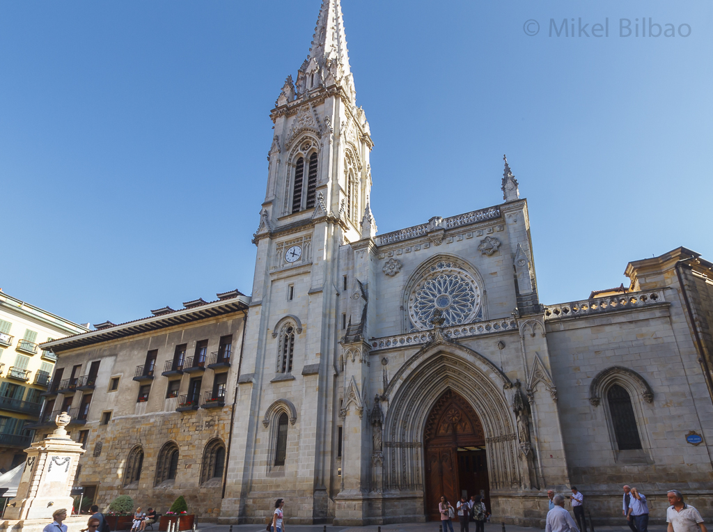

Casco viejo:
Índice:
Euskal Museoa Bilbao Museo Vasco:
El Museo Vasco (en euskera, Euskal Museoa) se ubica en la plaza Miguel de Unamuno de Bilbao (Vizcaya, País Vasco, España).
Según reza en su información divulgativa «tiene como principio rector de su colecciones y que testimonian los modos de vida que el pueblo vasco ha desarrollado a lo largo de los tiempos».
Historia:
La entidad, con el nombre original de Museo Arqueológico de Vizcaya y Etnográfico Vasco, abrió sus puertas en 1921 ocupando la planta baja del claustro barroco del antiguo Colegio de San Andrés, que perteneció a los Jesuitas hasta su expulsión de España en 1767; la adyacente iglesia de los Santos Juanes, hoy parroquia de culto regular, es el templo que en su momento perteneció al colegio jesuita. Desde el principio contó con el patrocinio de la Diputación Foral de Vizcaya y el Ayuntamiento de Bilbao.
Poco a poco, el museo fue ocupando los edificios anexos y aumentando sus colecciones, que abarcan la arqueología de Vizcaya y la etnohistoria del País Vasco. En la actualidad el museo se encuentra en un proceso de renovación tanto a nivel museológico como museográfico. La apertura de un nuevo acceso principal hacia la plaza Miguel de Unamuno es el punto de inicio de esta remodelación y el elemento más llamativo para los visitantes, por su contraste con la arquitectura del edificio histórico en el que se ubica. Aparte de los fondos abiertos al público, el museo ofrece servicios de investigación, biblioteca y fototeca, y ofrece la membresía en el programa Amigos del Museo.
Desde 1962 es Bien de Interés Cultural (BIC), con la categoría de Monumento Histórico-Artístico Nacional.
Colecciones:
Las exposiciones permanentes se distribuyen en cuatro plantas:
Planta baja:
Salas de laudas sepulcrales y heráldica. En esta planta hay también un espacio reservado para las exposiciones temporales y tienda. En la entrada se exhibe una escultura de Nestor Basterretxea, cedida en depósito por el Museo de Bellas Artes de Bilbao.
El centro del claustro lo ocupa el ídolo de Mikeldi procedente de Durango. En 2016, a fin de evitar que la humedad siguiese dañando la escultura, el suelo de césped fue reemplazado por un solado de piedra, y en junio de 2018 finalizó el cubrimiento del patio con una techumbre de vidrio.1​ Esta intervención contribuyó a un uso más polivalente del ámbito más espacioso del museo.
En el hueco de la escalera a la primera planta se yergue una reproducción de la cruz de Kurutziaga, de unos cuatro metros de altura, cuyo original del siglo XV se encuentra en la localidad de Durango.
Planta primera:
Exposiciones de armas (con vitrinas específicas de la Guerra Civil y las Guerras Carlistas), los vascos y el mar, la cultura pastoril, y las artes domésticas de la cerámica y el textil (lino y lana).
Presidiendo el descansillo de la escalera, cuelga un gran retrato pintado por Ignacio Zuloaga.
Planta segunda:
Salas dedicadas a la Prehistoria y la arqueología de Vizcaya.
Planta tercera:
Salas del Consulado de Bilbao, con muebles y demás recuerdos de dicha institución, entre los que destaca un conjunto de bancos de madera con tapicería de terciopelo rojo, de finales del siglo XVIII, cuyo diseño se atribuye a Luis Paret, quien residió en Bilbao durante varios años, desterrado de Madrid por Carlos III.
En esta planta se exhibe Además una maqueta colosal a escala de la provincia.
Catedral de Santiago de Bilbao:
La Catedral Basílica de Santiago en Bilbao (Vizcaya, País Vasco, España) es el templo católico que desde 1949 alberga la sede de la diócesis de Bilbao. Fue construida entre el último cuarto del siglo XIV y principios del XVI en estilo gótico, si bien su fachada y torre son el resultado de una profunda reconstrucción acometida en el siglo XIX en estilo neogótico. La Catedral toma su nombre del patrón de Bilbao, el apóstol Santiago el Mayor, en relación con el paso por la ciudad de un ramal costero del Camino de Santiago. Se trata de la iglesia gótica más monumental de Vizcaya y cumple asimismo la función de parroquia. En 1819 obtuvo el rango de basílica menor, siendo la primera iglesia que obtenía este título en el País Vasco.
Historia:
El edificio actual sucedió a otros dos anteriores en el mismo emplazamiento y con la misma advocación. El primero era anterior a 1300, fecha de la fundación de la villa por D. Diego López V de Haro mediante la Carta Puebla, y disponía de una necrópolis exterior situada en torno al muro de cabecera. El segundo templo fue básicamente una ampliación del anterior, obligada ante el crecimiento demográfico del núcleo urbano. Este segundo templo fue efímero, ya que en 1374 quedó arrasado en un pavoroso incendio, tras lo cual el Papa Gregorio XI dispensó indulgencias a quienes dieran limosnas para la erección del nuevo templo, conforme a un proyecto arquitectónico más ambicioso.
La catedral levantada tras el siniestro de 1374 es el resultado de un período largo y acumulativo de diferentes elementos: la iglesia, el claustro, el pórtico, la sacristía y la torre-fachada. Comenzadas a finales del siglo XIV, hacia 1397, conforme al estilo gótico clásico entonces imperante, las obras fueron prolongándose lentamente durante un siglo largo. Hacia mediados del siglo XV estaban terminados el triforio y la girola con sus cinco capillas centrales; en la segunda mitad de la centuria se trabajó en las demás capillas de la cabecera y posteriormente, ya en la frontera con el siglo XVI, en las capillas laterales de la nave. En estas mismas fechas se construyó el claustro y la Puerta del Ángel, que le da acceso desde la calle y que incorpora ya elementos del gótico florido.
Se completó así el conjunto gótico que años después, bien entrado el siglo XVI, se enriqueció con la Sacristía, el gran pórtico exterior y el perdido Retablo Mayor, ambos de estilo renacentista. El Retablo Mayor debió ser una gran creación artística del franco-flamenco Guiot de Beaugrant, maestro activo en Bilbao a mediados del siglo XVI, quien lo realizó entre 1533 y 1543; desmontado en 1805, de este retablo se conservan cuatro tallas de los Padres de la iglesia latina, hoy colocadas en la Sacristía, y otros tres bultos hoy sitos en las capillas del Pilar, el Cristo del Amor y Santa Lucía. El 11 de junio de 1819 Roma otorgó a la iglesia el rango de basílica menor, la primera del País Vasco. En la segunda mitad del siglo XIX se llevaron a cabo el repicado de paredes y bóvedas, la reconstrucción de la Sacristía y, en la década de 1880, la gran reforma de toda la fachada, con su torre y su aguja, en un estilo neogótico armonizado con las viejas formas góticas, dando al templo su aspecto actual.
En el primer tercio del siglo XX se restauró el claustro y en los años finales del siglo, con posterioridad a las devastadoras inundaciones de 1983, cuando las aguas del Nervión-Ibaizábal invadieron todo el Casco Viejo bilbaíno y anegaron la Catedral, se actuó en todo el conjunto, reparando y limpiando los interiores y exteriores dañados por la riada. Las actuaciones se prolongaron hasta el año 2000. Como resultado de esta restauración, la Catedral presenta hoy un perfecto estado de conservación.
En 1949 la basílica adquirió la dignidad catedralicia al establecerse la Diócesis de Bilbao como una desmembración de la Diócesis de Vitoria. La nueva diócesis fue instituida por Pío XII mediante la bula de erección Quo Commodius con fecha del 2 de noviembre de 1949. En 1950 tomó posesión de la sede episcopal el primer prelado, Casimiro Morcillo González, quien consagró la Catedral Basílica el 30 de diciembre de 1955.
Es Monumento Histórico-Artístico Nacional desde el 3 de junio de 1931.
Descripción:
La Catedral de Bilbao destaca principalmente por su pequeño tamaño (para tratarse de un templo catedralicio, aunque, en realidad, amplio para una iglesia parroquial, tal como fue concebida) y lo compacto de sus rasgos góticos. Las dimensiones son 51,5 m de largo, 22,3 m de ancho, 22,5 de alto en la nave mayor y 1.100 m2 de superficie. El aparejo es muy uniforme, de piedra de sillería arenisca, y ofrece en su interior un bello colorido, tostado o vinoso con vetas.
Plaza nueva:
La plaza Nueva es una plaza ubicada en el Casco Viejo de Bilbao.
Historia:
La plaza Nueva de Bilbao es una propuesta arquitectónica de estilo neoclásico. Un proceso administrativo muy complejo prolongó la construcción de la plaza durante sesenta y cinco años repartidos en dos periodos:
- Entre 1786 y 1829 se puso en marcha el proyecto.
- Entre 1829 y 1851 se realizó.
Lo cual conllevó una triple autoría:
- En 1821 Silvestre Pérez levantó los planos.
- En 1825 Antonio de Echevarría asumió la dirección de la obra, realizando dos proyectos de reforma en 1829 y 1832.
- La dirección pasó entre 1840 y 1851 a Avelino de Goicoechea, quien a su vez modificó el proyecto de Echevarría.
La idea de construir una plaza nueva fue debida al espíritu ilustrado bilbaíno de finales del siglo XVIII. Se trataba de sustituir el recinto antiguo por un entorno funcional, cómodo, higiénico y bello.1​
En la actualidad es sede de Euskaltzaindia.
Mercado de la Rivera:
El Mercado de la Ribera es una plaza de mercado situada en Bilbao, capital de la provincia vasca de Vizcaya, en el norte de España. Está ubicado en la orilla derecha de la ría del Nervión al lado del Casco Viejo. Tiene una superficie comercial de 10.000 m2 lo que le hace ser el mayor mercado cubierto de Europa.1​ En su interior recoge puestos de venta de diferentes productos destacando los alimenticios al fresco. Está ordenado por el tipo de producto que se comercializa. Por plantas la distribución es la siguiente:
- Planta baja - Pescadería: pescado fresco, congelados, mariscos, encurtidos, afilador y bacaladerías.
- Planta primera - Carnicerías: Carnicerías, charcuterías, chacinería, bar, aves, pastas y pastelerías, encurtidos y conservas.
- Planta segunda - Frutas y verduras: frutas y verduras, huevería, floristería, champiñones y semillas.
Se mantiene incluso una área de venta directa de productos de producidos en las pequeñas explotaciones agrícolas del país, los caseríos.
Ubicación:
El mercado de la Ribera se sitúa en la calle Ribera, a orillas de la ría del Nervión. En la antigua Plaza Mayor o Vieja. Junto a él se sitúa la iglesia de San Antón y cuando se construyó, la casa consistorial. En el mercado se encuentran la pasarela peatonal del Conde de Mirasol y el Puente de San Antón.
La calle Ribera se conforma entre la orilla de la ría y los edificios del Casco Viejo, popularmente conocido como "Las Siete Calles" que es una de las principales zonas comerciales de la ciudad. Para llegar a él se pueden utilizar diversos medios de transporte público, metro, tranvía y autobús. La estación de los ferrocarriles de vía estrecha de Euskotren queda a unos 3 minutos del mercado.
Historia:
En el siglo XIV el área de mercado de Bilbao se estableció en la Plaza Vieja o Mayor, al lado de la iglesia de San Antón. Este punto estaba considerado "el centro neurálgico de la Villa". El mercado que se formaba allí tenía, en palabras de Emiliano de Arriaga:
Un mercado bien surtido de cuanto apetecer pudiera el más refinado gastrónomo.
En 1870 ya estaban cubiertos la totalidad los puestos con una tejavana proporcionando resguardo estable a las inclemencias meteorológicas, se habían comenzado a cubrir los diferentes puestos sobre el año 1840. Poco después se construyó un recinto de mucho más porte en hierro colado y forjado y cristal, siguiendo la moda de arquitectura modernista de la época. Este nuevo recinto cerraba algunos de los costados y mantenía un paso para la circulación de peatones en su interior. Este recinto tenía un grave problema de concentración de calor por el que se llegó a instalar un sistema de riego en su tejado para hacer que la temperatura interior no fuera insoportable. En 1850 se estableció un servicio de control de calidad para el pescado, la leche y la carne.
En 1928 se toma la decisión de la construcción de un nuevo mercado que permitiera el aumento del número de puestos. El 22 de agosto de 1929 se inaugura un nuevo edificio realizado en hormigón armado obra del arquitecto Pedro de Ispizua realizado en estilo racionalista propio de la época. El proyecto, en el que se buscaba la funcionalidad, se basa en espacios abiertos sin columnas interiores, con buena ventilación para evitar olores no deseados y con una iluminación natural muy cuidada en la que se utilizan materiales translucidos que permiten el paso de la luz cenital de un piso a otro y la utilización de grandes vidrieras, celosías y florones. Todo esto, junto a la decoración de sus fachadas conforma un estilo Art Decó ecléctico.
A la inauguración, realizada en plenas fiestas de Bilbao, acudieron los representantes del entonces gobierno de España encabezado por el general Primo de Rivera.
En 1971 se inaugura Mercabilbao, centro de distribución de mercancías al fresco de Vizcaya, y el mercado de la Ribera deja de ser el centro de abastecimiento para mayoristas de la zona, pasando a dar servicio de "mercado de barrio" al Casco Viejo y a Bilbao La Vieja.
En agosto de 1983 sufre graves daños debido a las inundaciones que asolaron Vizcaya y su capital. Se aprovecha su reconstrucción para realizar una profunda reforma modernizando las instalaciones.
En el año 1990 el Mercado de la Ribera entra en el Libro Guinness como el Mercado Municipal de Abastos más completo y es considerado el mayor mercado en cuanto a número de comerciantes y puestos.
En el año 2000 el ayuntamiento de Bilbao traspasa la gestión del mercado a los comerciantes, esta gestión se recuperaría en mayo de 2008 al no alcanzar los comerciantes un acuerdo sobre su remodelación. Dos años después de realiza un estudio inicial sobre su estado estructural el cual concluye que, a simple vista, no se detectan fallos estructurales pero que convendría hacer un estudio más en profundidad. Las propuesta municipal de realizar una reforma interior da pie a que se haga un estudio en profundidad del estado estructural del mismo que se encarga en el año 2008, en octubre la empresa Labein hace públicos los resultados de dicho estudio en los cuales se expone que hay un grave déficit estructural con daños graves que afectan en al hormigón armado habiendo áreas donde la carga por metro cuadrado no puede ser superior a los 100 kg.
El origen de los daños estructurales se sitúa en la utilización de arena de playa para la fabricación del hormigón. Esta arena, muy rica en cloruros, habría provocado la oxidación de los hierros que conforman la armadura del hormigón poniendo en entredicho la estabilidad de los elementos sustentadores estructurales. Esto obligó a reconstruir una gran parte del edificio, operación que se puso en marcha en el verano de 2009 con el compromiso de no cerrar ni un solo día durante el tiempo que duraran las obras.
El 9 de diciembre de 2010 se inaugura la primera fase de la obra, que se realiza bajo proyecto del arquitecto Emilio Puertas, que ocupa la parte este, la más cercana a la iglesia de San Antón, y central del mismo que suponen unos 7.000 metros cuadrados a los que se añaden otros 3.000 que se han ganado en el exterior, unos 1.300 en San Antón y el resto en la parte de la Merced. La reforma, a aparte de corregir los graves problemas estructurales, ha implementado los recursos de venta más modernos y ha supuesto un cambio radical en la gestión de la luz natural con amplias superficies acristaladas. También se ha recuperado el antiguo camino de sirga.
MENÚ
-
Página principal
-
Lugares de interés
-
Danos tu opinión
-
Otras páginas web:
-
Contacto
-
VOLVER